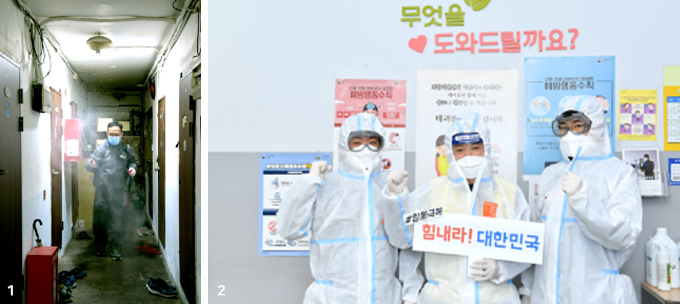

Review of COVID-19 Special Allocation Projects in Four Areas
Support for medical staff and volunteers
– providing protective gear, meals, snacks, healthy food
The medical staff urgently deployed to Daegu need masks and protective gear for sure, but they also lack spare clothing and daily necessities. In order to address this challenge, we connected with Daegu Medical Association to provide medical supplies and daily necessity kits.” - Miral Foundation
Disinfection and sanitation control
– providing items such as masks, hand sanitizers, thermometers, and thermal cameras
“Over 100 homeless people use our center every day. We were able to install a thermovision camera thanks to this emergency support, and are greatly relieved because we will be able to see if anyone is running a fever. Above all, the people visiting our center are very satisfied.” - Homeless Support Center
Support in welfare service gaps
– substitute care personnel, welfare activities, temporary accommodations for those who have tested positive (special facilities), etc.
“When a handicapped person or a responsible family member for that person becomes quarantined or even tests positive, he or she faces real and immediate challenges. This emergency support provided us with additional personnel, sanitation supplies and money to cover testing costs to prevent any gap in the care of those disabilities, relieving a lot of stress.” - Korea Council of Centers for Independent Living
Livelihood support for those in need
– supporting living expenses for families in crisis and providing customized daily necessity and grocery kits
“Free meal services offered by community welfare centers were suspended, so we were worried about vulnerable groups going hungry. Companies provided us with food products, such as rice noodles and bottled water, and we delivered them to our neighbors with little means.” - People Spreading Hope

1. Disinfecting houses and alleys in poor neighborhood near Seoul Station
2. Employees in protective clothing provided to staff at a homeless counselling center
#LetsDoThisTogether #GoKorea
2. Employees in protective clothing provided to staff at a homeless counselling center
#LetsDoThisTogether #GoKorea

international@chest.or.kr
Community Chest of Korea, All Rights Reserved
Community Chest of Korea, All Rights Reserved